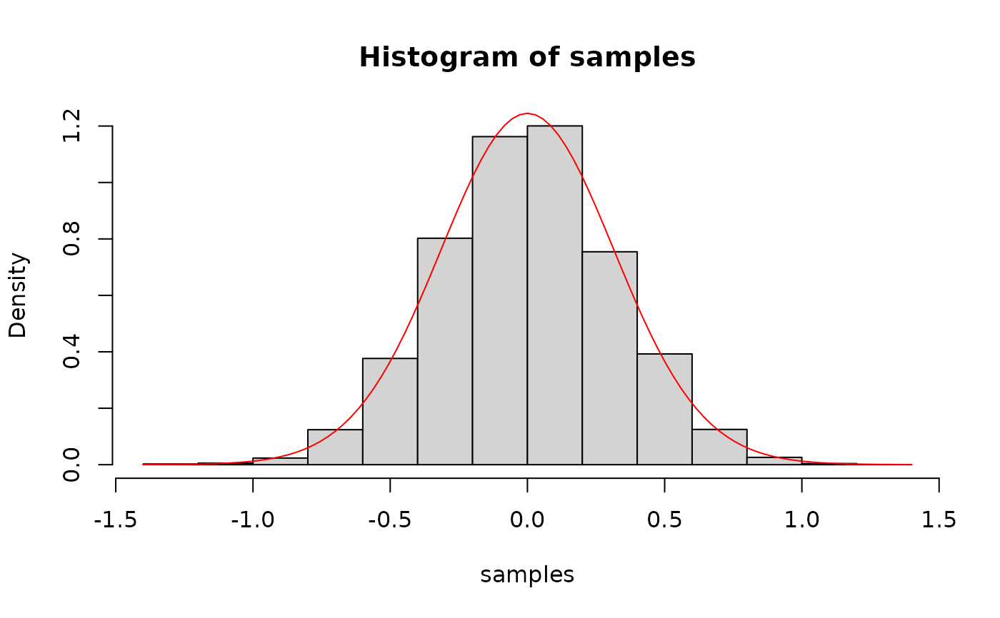

Performs rejection sampling to generate samples from a target distribution.
Arguments
- n
Integer. The number of samples to generate.
- f
Function. The target density function from which to sample.
- max_f
Numeric. The maximum value of the target density function
f.- proposal_fun
Function. A function that generates samples from the proposal distribution.
- ...
Additional arguments to be passed to the target density function
f.
Examples
target_density <- function(x) brms::dvon_mises(x, mu = 0, kappa = 10)
proposal <- function(n) runif(n, min = -pi, max = pi)
samples <- rejection_sampling(10000, target_density, max_f = target_density(0), proposal)
hist(samples, freq = FALSE)
curve(target_density, col = "red", add = TRUE)
